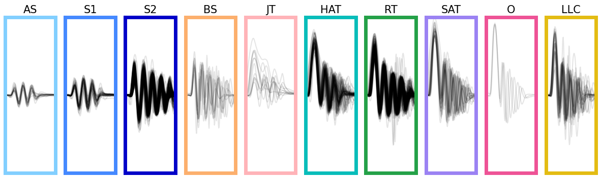

Classification#
import numpy as np
import pandas as pd
import matplotlib.pyplot as plt
import matplotlib.gridspec as gridspec
from megabouts.tracking_data import TrackingConfig,load_example_data,FullTrackingData
from megabouts.config import TailPreprocessingConfig,TrajPreprocessingConfig
from megabouts.preprocessing import TailPreprocessing,TrajPreprocessing
from megabouts.config import TailSegmentationConfig
from megabouts.segmentation import Segmentation
from megabouts.classification import TailBouts,BoutClassifier
from megabouts.utils import bouts_category_color,bouts_category_name_short
Check if pytorch is running on cpu or gpu:
Show code cell source
import torch
# Force cpu use:
torch.cuda.is_available = lambda : False
device = torch.device('cuda' if torch.cuda.is_available() else 'cpu')
print(device)
cpu
TrackingConfig and TrackingData similar to tutorial_Tail_Preprocessing
df_recording, fps, mm_per_unit = load_example_data('fulltracking_posture')
tracking_cfg = TrackingConfig(fps=fps, tracking='full_tracking')
head_x = df_recording['head_x'].values*mm_per_unit
head_y = df_recording['head_y'].values*mm_per_unit
head_yaw = df_recording['head_angle'].values
tail_angle = df_recording.filter(like='tail_angle').values
tracking_data = FullTrackingData.from_posture(head_x = head_x,
head_y = head_y,
head_yaw = head_yaw,
tail_angle = tail_angle)
tail_preprocessing_cfg = TailPreprocessingConfig(fps=tracking_cfg.fps)
tail_df_input = tracking_data.tail_df
tail = TailPreprocessing(tail_preprocessing_cfg).preprocess_tail_df(tail_df_input)
traj_preprocessing_cfg = TrajPreprocessingConfig(fps=tracking_cfg.fps)
traj_df_input = tracking_data.traj_df
traj = TrajPreprocessing(traj_preprocessing_cfg).preprocess_traj_df(traj_df_input)
tail.df.head(5)
| angle | ... | angle_smooth | vigor | no_tracking | |||||||||||||||||
|---|---|---|---|---|---|---|---|---|---|---|---|---|---|---|---|---|---|---|---|---|---|
| segments | ... | segments | |||||||||||||||||||
| 0 | 1 | 2 | 3 | 4 | 5 | 6 | 7 | 8 | 9 | ... | 2 | 3 | 4 | 5 | 6 | 7 | 8 | 9 | |||
| 0 | -0.101865 | -0.092813 | -0.107645 | -0.110575 | -0.047699 | -0.145887 | -0.130414 | -0.058892 | -0.128705 | NaN | ... | -0.051057 | -0.055168 | -0.055898 | -0.061701 | -0.061091 | -0.069420 | -0.115014 | 0.000183 | NaN | True |
| 1 | -0.082618 | -0.087957 | -0.096951 | -0.092459 | -0.119418 | -0.043354 | -0.099788 | -0.101741 | -0.171555 | NaN | ... | -0.046070 | -0.052906 | -0.056578 | -0.063577 | -0.062286 | -0.064780 | -0.091617 | 0.000321 | NaN | True |
| 2 | -0.093377 | -0.095235 | -0.094292 | -0.105936 | -0.073785 | -0.084193 | -0.144378 | -0.112398 | -0.042585 | NaN | ... | -0.041909 | -0.050905 | -0.056916 | -0.064832 | -0.062943 | -0.060658 | -0.072246 | 0.000430 | NaN | True |
| 3 | -0.092590 | -0.083650 | -0.100938 | -0.088223 | -0.097370 | -0.099559 | -0.101538 | -0.091272 | -0.021459 | NaN | ... | -0.038574 | -0.049166 | -0.056913 | -0.065467 | -0.063063 | -0.057053 | -0.056900 | 0.000512 | NaN | True |
| 4 | -0.086849 | -0.081982 | -0.096705 | -0.118475 | -0.046264 | -0.136459 | -0.115412 | -0.085300 | -0.015487 | NaN | ... | -0.036064 | -0.047688 | -0.056569 | -0.065483 | -0.062646 | -0.053965 | -0.045579 | 0.000565 | NaN | True |
5 rows × 32 columns
Segmentation using tail vigor#
Set the threshold to 20 & apply segmentation to
tail.vigor:
tail_segmentation_cfg = TailSegmentationConfig(fps = tracking_cfg.fps,
threshold=20)
segmentation_function = Segmentation.from_config(tail_segmentation_cfg)
segments = segmentation_function.segment(tail.vigor)
We collect the segmented bouts using
extract_tail_arrayandextract_traj_array:
tail_array = segments.extract_tail_array(tail_angle=tail.angle_smooth)
traj_array = segments.extract_traj_array(head_x=traj.x_smooth,
head_y=traj.y_smooth,
head_angle=traj.yaw_smooth)
The array contains tail as well as trajectory aligned on the bouts onset
Running classifier on the segmented bouts#
Load the classfier, we recommend using
exclude_CS=Trueif there was no prey during the experiments:
classifier = BoutClassifier(tracking_cfg,tail_segmentation_cfg,exclude_CS=True,device=device)
/opt/hostedtoolcache/Python/3.10.15/x64/lib/python3.10/site-packages/megabouts/classification/classification.py:74: FutureWarning: You are using `torch.load` with `weights_only=False` (the current default value), which uses the default pickle module implicitly. It is possible to construct malicious pickle data which will execute arbitrary code during unpickling (See https://github.com/pytorch/pytorch/blob/main/SECURITY.md#untrusted-models for more details). In a future release, the default value for `weights_only` will be flipped to `True`. This limits the functions that could be executed during unpickling. Arbitrary objects will no longer be allowed to be loaded via this mode unless they are explicitly allowlisted by the user via `torch.serialization.add_safe_globals`. We recommend you start setting `weights_only=True` for any use case where you don't have full control of the loaded file. Please open an issue on GitHub for any issues related to this experimental feature.
net.load_state_dict(torch.load(transformer_weights_path,map_location=torch.device(self.device)))
Apply the classfier:
classif_results = classifier.run_classification(tail_array=tail_array,
traj_array=traj_array)
Now we re-segment the bouts using the first half beat as a reference, this improves the alignement of the tail bouts:
segments.set_HB1(classif_results['first_half_beat'])
tail_array = segments.extract_tail_array(tail_angle=tail.angle_smooth,
align_to_onset=False)
traj_array = segments.extract_traj_array(head_x=traj.x_smooth,
head_y=traj.y_smooth,
head_angle=traj.yaw_smooth,
align_to_onset=False)
We can use the TailBouts class to store the results of the classifier:
# Format Output:
bouts = TailBouts(segments=segments,
classif_results=classif_results,
tail_array=tail_array,
traj_array=traj_array)
Let’s display the bouts classified:
Show code cell source
id_b = np.unique(bouts.df.label.category[bouts.df.label.proba>0.5]).astype('int')
fig, ax = plt.subplots(facecolor='white',figsize=(15,4))
ax.spines['top'].set_visible(False)
ax.spines['right'].set_visible(False)
ax.spines['bottom'].set_visible(False)
ax.spines['left'].set_visible(False)
ax.set_xticks([])
ax.set_yticks([])
G = gridspec.GridSpec(1,len(id_b))
ax0 = {}
for i,b in enumerate(id_b):
ax0 = plt.subplot(G[i])
ax0.set_title(bouts_category_name_short[b],fontsize=15)
for i_sg,sg in enumerate([1,-1]):
#ax0.set_title(NameCat[b%11])
id = bouts.df[(bouts.df.label.category==b) & (bouts.df.label.sign==sg)&(bouts.df.label.proba>0.5) ].index
if len(id)>0:
ax0.plot(sg*bouts.tail[id,7,:].T,color='k',alpha=.1)
ax0.set_xlim(0,tail_segmentation_cfg.bout_duration)
ax0.set_ylim(-4,4)
ax0.set_xticks([])
ax0.set_yticks([])
for sp in ['top','bottom','left','right']:
ax0.spines[sp].set_color(bouts_category_color[b])
ax0.spines[sp].set_linewidth(5)
plt.show()
